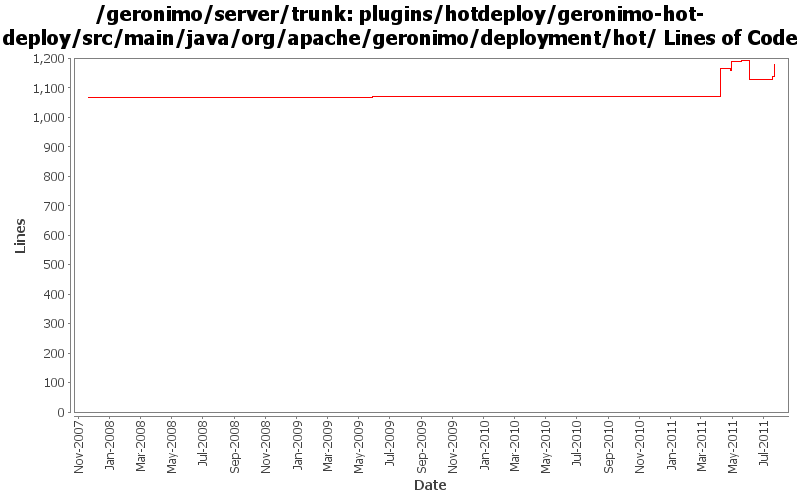

[root]/plugins/hotdeploy/geronimo-hot-deploy/src/main/java/org/apache/geronimo/deployment/hot

| Author | Changes | Lines of Code | Lines per Change |
|---|---|---|---|
| Totals | 34 (100.0%) | 1102 (100.0%) | 32.4 |
| gawor | 7 (20.6%) | 615 (55.8%) | 87.8 |
| rwonly | 10 (29.4%) | 299 (27.1%) | 29.9 |
| kevan | 3 (8.8%) | 102 (9.3%) | 34.0 |
| xuhaihong | 5 (14.7%) | 50 (4.5%) | 10.0 |
| djencks | 2 (5.9%) | 31 (2.8%) | 15.5 |
| jdillon | 5 (14.7%) | 5 (0.5%) | 1.0 |
| gdamour | 2 (5.9%) | 0 (0.0%) | 0.0 |
GERONIMO-6093 changes to satisfy some special Hot-deploy scenarios
108 lines of code changed in 3 files:
GERONIMO-6028 should not calculate the configId from a non-exist file.
17 lines of code changed in 1 file:
change one log.error to log.warn in hotdeploy
1 lines of code changed in 1 file:
GERONIMO-6028 Nothing prompted when hotdeploy a re-named eba application
5 lines of code changed in 1 file:
GERONIMO-5994: Hot deployer fixes & refactoring
587 lines of code changed in 5 files:
a bit clean up for hot deploy
6 lines of code changed in 1 file:
just untabify
27 lines of code changed in 1 file:
GERONIMO-5832 remove the un-relative ids from toRemove list after its traversal, and don't react the events that hot-deployer generates to avoid the deletion of the new file during file update action
71 lines of code changed in 1 file:
listener won't be null, no more code logic change
74 lines of code changed in 1 file:
GERONIMO-5832 Error message repeatedly show on server console when deployed web application twice
17 lines of code changed in 1 file:
GERONIMO-5915 No need to include exception in the log. Make log text more informative. This case will happen on a start of a newly installed server
1 lines of code changed in 1 file:
GERONIMO-5891 persist the DirectoryMonitor state to disk. Used to read initial state on server start. So, hot-deploy changes made while server was stopped can be processed
101 lines of code changed in 2 files:
GERONIMO-5793 avoid a deadlock when hot-uninstalling ebas
25 lines of code changed in 1 file:
No function changes, fix some warning and use generic type
21 lines of code changed in 2 files:
GERONIMO-5008 Create util methods for all the Geronimo components
27 lines of code changed in 2 files:
GERONIMO-5008 Create util methods for all the Geronimo components
2 lines of code changed in 1 file:
GERONIMO-3402 Apply patch from Lasantha Ranaweera, Replace deprecated DeployUtils with FileUtils
6 lines of code changed in 1 file:
no need to undeploy if deployment failed (GERONIMO-4110)
1 lines of code changed in 1 file:
More loggers back to static
2 lines of code changed in 2 files:
(GERONIMO-3985) Use SLF4J as the primary logging facade for Geronimo
3 lines of code changed in 3 files:
When distributing w/o the explicit selection of a target, we only distribute
to the first target returned by DeploymentManager. This first target is
the default target, or configuration store, and users can specify an abstract
name query (in EditableKernelConfigurationManager) to identify this default
target.
Now that multiple configuration stores per server are better handled
out-of-the-box, we can re-enable the "clustered" configuration stores.
Also, let's more the rmock dependency to testsupport-common so that we
can use it from all our tests.
This fixes GERONIMO-3612 - When no target configuration store is explicitly
specified while installing a configuration, the configuration should be
installed to a default configuration store
0 lines of code changed in 2 files: